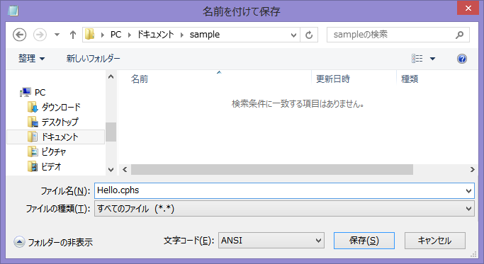
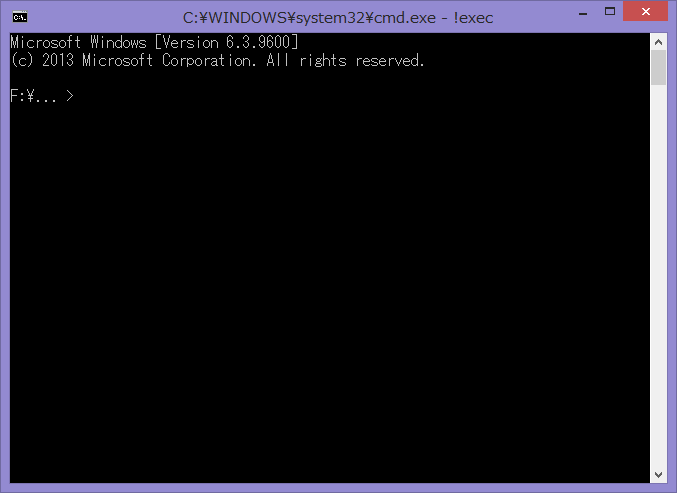
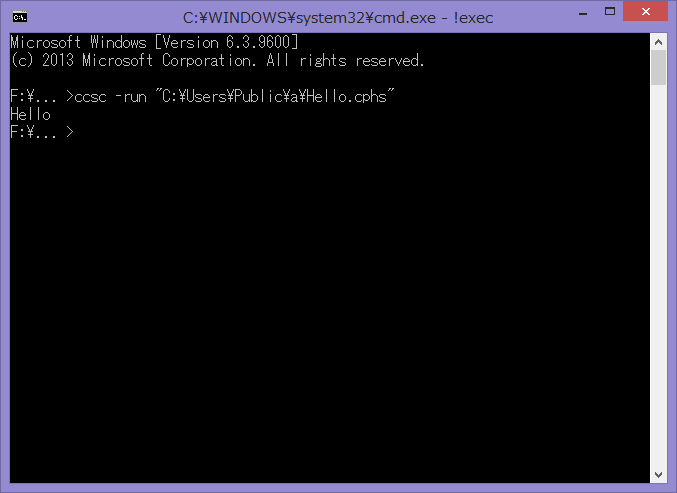
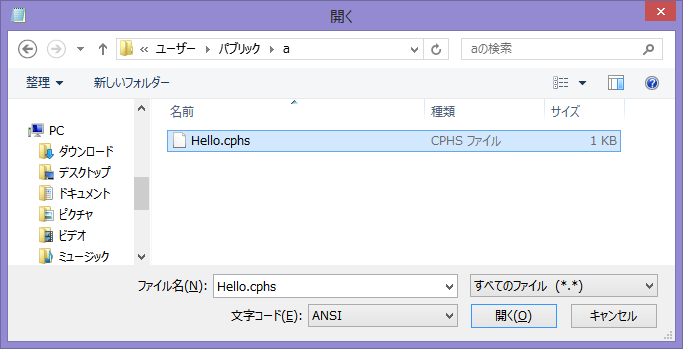

CamphorScript入門
CamphorScriptを学ぼう
1. CamphorScriptの使い方
1-1. 使い方
まず、「メモ帳」を起動し、以下のように打ち込んで下さい。
大文字と小文字、全角と半角は区別されます。全て半角で入力して下さい。
char a = 'H', b = 'e', c ='l', d = 'o'; write(a); write(b); write(c); write(c); write(d); |
「ファイル」から「名前を付けて保存」を選択し、「ファイルの種類」を「すべてのファイル」にした後、ファイル名をHello.cphsとして保存して下さい。

次に、同封の!exec.batというファイルを開いて下さい。

表示された画面にccsc -run "と打ち込んだ後、 先ほど作成したHello.cphsを!exec.batにドラッグ&ドロップし、 その後に"と打ち込んで下さい。
Enterキーを押すと、Helloと表示されます。

何らかのエラーが発生した場合は、上記のプログラムの写し間違いである可能性があるので、直して再実行して下さい。
ちゃんとHelloと表示された場合は、おめでとうございます、初めてのCamphorScriptプログラムの完成です！
- ターミナルを開き、sudo apt-get install haskell-platformを実行
- 同封のフォルダを適切な場所にコピー
- ターミナルを開き、今コピーしたccsc.hsのあるディレクトリにcd
- ghc --make ccsc -o ccsc && chmod 755 ccscを実行
- ./ccscを実行し、エラーが出ないことを確認する
-
テキストエディタを起動し、以下のように打ち込む
(大文字と小文字、全角と半角は区別されます。全て半角で入力して下さい。)char a = 'H', b = 'e', c ='l', d = 'o'; write(a); write(b); write(c); write(c); write(d);
- Hello.cphsという名前で保存する
- ./ccsc -run "先ほど作成したHello.cphsの絶対パス"を実行
- Helloと出力されていれば成功！
1-2. 基本
前回作成したプログラムは、Helloと出力するだけのプログラムです。
char a = 'H', b = 'e', c ='l', d = 'o'; write(a); write(b); write(c); write(c); write(d); |
先に進む前に、このプログラムを詳しく見ていきましょう。
まず1行目では、aやbなどの変数と言うものを宣言しています。 変数とは、データを格納しておくための入れ物です。
1行目では、宣言と同時にそこに'H'などのデータを格納しています。（「初期化」と呼ぶ）
それ以降の行では、writeと言うものを使って、変数の中のデータを出力しています。 また、出力した後も変数の中にデータは残るので、 cに'l'が入っている時に write(c); write(c);と書けば、llと出力されるわけです。
「なぜわざわざ変数なんか作るんだろう」と思うかもしれませんが、今のところは「そういうものだ」と思っていて下さい。
では、基本的な仕組みが分かったところで、出力する中身を変えていきましょう。ということで、前回作ったHello.cphsを開きましょう。
「メモ帳」を開き、「ファイル」から「開く」を選択し、「テキスト文書」となっているところを「すべてのファイル」に変更し、前回作ったHello.cphsを選択し、開いて下さい。

お好みのテキストエディタをお使い下さい。
ファイルが開けたところで、プログラムを書き換え、実行してみましょう。
char a = '2', b = '+', c = '3', d = '=', e = '5'; write(a); write(b); write(c); write(d); write(e); |
これまでのプログラムを見て分かるように、一つ一つの命令（「文」と呼ぶ）は 原則としてセミコロン（;）で終わります。
また、空白や改行は自由に入れることが出来ます。例えば、
char a = '2', b = '+', c = '3', d = '=', e = '5'; |
と
char a = '2' ,b = '+',c = '3', d = '=',e ='5' ; |
は全く同じものとして扱われます。 ただ、後者のような書き方をすると非常に読みにくくなるので、このような書き方はお薦めしません。
例外的に、charをch arと書いたり、 char aをcharaと書いたりすることは出来ず、 また'と'の間に余分な空白や改行は置けません。
2. CamphorScriptの基本
2-1. 入力
プログラムは、実行中にデータを受け取ることができます。次のプログラムを見てください。
char a = '@', b = '>', c = ' ', d = ':'; write(b);write(c); read(a); write(d);write(a);write(a); |
実行すると、> と出力され、一旦プログラムが停止します。キーボードから文字を入力して下さい。
入力が終わるとプログラムが再開します。このプログラムの場合、:が出力された後、入力された文字が2回出力されます。
なお、以下、このプログラムの実行結果をこのように表します。赤い文字は実際には表示されないのでご注意を。
さて、それではプログラムを詳しく見ていきましょう。
1行目の宣言は今までと同様です。2行目では、> を出力しています。
3行目では、readと言うものを使って、変数の中にあるデータを入力から受け取った文字で上書きしています。
4行目では、:を出力した後に、入力した文字を2回出力しています。
前回のプログラムでは、aを@で初期化していますが、結局使っていません。
それもそのはず、3行目でreadを使ってaを上書きしているので、 @は消えてしまいます。
消えてしまうのならば、そもそも初期化を省略してしまっても問題ないはずです。ということで、消してみましょう。
char a, b = '>', c = ' ', d = ':'; write(b);write(c); read(a); write(d);write(a);write(a); |
問題ないみたいですね。
このように、変数宣言時の初期化は省略することができます。